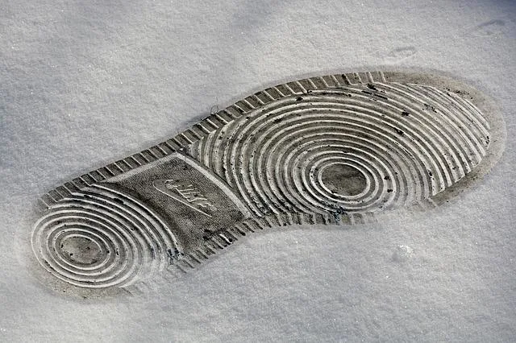

We believe security software like Kicksecure needs to remain Open Source and independent. Would you help sustain and grow the project? Learn more about our 14 year success story and maybe DONATE!
Live
ModeDocumentationread-onlyPrevious
page: Live ModeIndex page:
DocumentationNext page:
read-only
VM Live Mode: Anti-forensics Precautions

Anti-forensics Precautions when using Kicksecure VMs in Live Mode.
Minimize what is written to the hard drive when using Kicksecure VMs in Live Mode.
This wiki page is inapplicable using host live mode.
Introduction
Kicksecure users have the option of booting into Live Mode. When using this feature in a Kicksecure VM, precautions should still be taken on trusted systems (like GNU/Linux hosts) to prevent leaving traces -- proprietary operating systems such as Windows and macOS are a lost cause.
At the moment, there is only one advantage of this configuration compared to using Live Mode as HOST -- achieving selective amnesia for some virtual machines (VM) while others remain persistent. This section is a work in progress and not exhaustive.
When Kicksecure VMs are run as a live system, all changes are written to non-persistent memory (RAM) by default. However, it is possible for this design to be bypassed by malware, swap files, core dumps, and other relevant configurations that are in effect. Fortunately, most of these can be disabled. [1] [2] [3] [4]
To prevent malware from remounting the hard drive as read-write, it is highly recommended to use read-only hard drive mode. This raises the bar because malware would need to break out of the VM to gain persistence. In order to stymie disk forensics, it is suggested to apply full disk encryption on the host, and the computer should be powered off when not in use.
Alternatively or in addition to full disk encryption, the entire host operating system could be run in live mode. This is called HOST Live Mode. In this configuration, all writes are redirected to non-persistent memory (RAM). Running the host operating system in live mode would additionally benefit from a correctly implemented write protection switch; this is not required but highly recommended. See read-only.
To make memory forensics harder, make sure you shut down your computer normally [5] and then remove the machine from any power source by pulling the power plug. In the case of notebooks, the battery should be removed. [6] See also Cold Boot Attack Defense.
Swap
 Host swapping may be the biggest threat to anti-forensics on Linux when
running in a VM. [7]
Host swapping may be the biggest threat to anti-forensics on Linux when
running in a VM. [7]
Disabling Swap for an Entire System
Turning off swap for the whole system may cause system instability or crashes if the RAM hard limit is reached. However, the ample RAM in new systems makes this unlikely and it is worth the tradeoff. [8] Disabling swap also disables the hibernation functionality.
Host
On the host
1. Disable swap either temporarily or persistently.
The following command will disable swap and delete the file during the life of this session.
sudo swapoff -a
To disable swap in a persistent way, edit the fstab file
and comment out the line (using #) with the swap
partition.
sudoedit /etc/fstab
2. Save and reboot.
3. Confirm swap is disabled.
To check it is off, run the free command. The swap line
should show zeros.
free -h
TODO: the existing swap partition should be securely wiped since sensitive information like encryption keys might have already leaked there.
KVM
Disabling swapping selectively for KVM VM
An alternative KVM-only solution is to set guest memory pages as 'locked'. [9] [10]
<memoryBacking><locked/></memoryBacking>This option is not without disadvantages - it can be abused by malicious guests DoSing the host through RAM exhaustion. [11]
Note: Setting vm.swappiness = 0 does not completely
prevent swapping. [12]
Disabling Program Crash Dumps
Besides swap, there is the problem of disabling process memory dumping to disk.
Kernel
A user must go out of their way to enable kernel memory dumps since it is not enabled by default; kdump-tools is utilized in Debian. [13]
Userspace
The default core dump file size is 0 on Debian Linux:
[14]
ulimit -c 0
This setting is enforced for systemd-coredump too and can be verified
by inspecting the lack of core files in /var/spool or
/var/lib/systemd/coredump when an intentional crash is
induced (/var/crash does not exist in Debian but it may be
available in other Linux distributions). [15]
Disable setuid processes dumping their memory
Processes with elevated permissions (or the setuid bit) might still
be able to perform a core dump, depending on your other settings. These
processes usually have more access and might contain more sensitive data
segments in memory, so they should be changed as well. The behavior can
be altered with a sysctl key, or directly via the /proc
file system. For permanent settings, the sysctl command and
configuration is typically used. A setting is called a 'key', which has
a related value attached to it (also known as a key-value pair).
To disable programs with the setuid bit from dumping, set the fs.suid_dumpable to zero:
sudo su
echo "fs.suid_dumpable=0" >> /etc/sysctl.conf
Reload the sysctl configuration with the -p flag to activate any changes you made. sysctl -p
See Also
Footnotes
- ↑ Forensics
- ↑ Kicksecure Persistence vs Live vs Amnesic
- ↑ Encrypted Guest Images: Other Security Considerations
- ↑ Core Dumps
- ↑ so the Linux kernel's memory erasing features
(
page_poison,slub_debugorinit_on_free) and/or your firmware reset attack mitigation can kick in - ↑ And/or the memory should be wiped upon shutdown. This is a theoretical mechanism at present because it is undocumented. https://forums.whonix.org/t/is-ram-wipe-possible-inside-whonix/5596
- ↑ Linux also uses swapping despite having apparent "free" memory. The kernel tends to swap out long-inactive and memory-consuming processes. This frees up RAM for caches and therefore improves responsiveness.
- ↑ https://superuser.com/questions/243357/how-to-prevent-a-specific-program-from-swapping
- ↑ https://serverfault.com/questions/561446/how-can-i-keep-important-vms-in-memory-without-disabling-swap
- ↑ https://libvirt.org/formatdomain.html#memory-backing
- ↑ When set and supported by the hypervisor, memory pages belonging to the domain will be locked in the host's memory and the host will not be allowed to swap them out, which might be required for some workloads such as real-time. For QEMU/KVM guests, the memory used by the QEMU process itself will be locked too: unlike guest memory, this is an amount libvirt has no way of figuring out in advance, so it has to remove the limit on locked memory altogether. Thus, enabling this option opens up to a potential security risk: the host will be unable to reclaim the locked memory back from the guest when it is running out of memory. This means a malicious guest allocating large amounts of locked memory could cause a denial-of-service attack on the host. Due to the risk, this option is discouraged unless your workload demands it. Even then, to mitigate these risks it is strongly recommended to set a `hard_limit` (see memory tuning) on memory allocation suitable for the specific environment at the same time.
- ↑ https://superuser.com/questions/760102/why-do-i-get-swapping-even-if-i-set-vm-swappiness-to-0
- ↑ https://www.bentasker.co.uk/documentation/linux/312-installing-and-configuring-kdump-on-debian-jessie
- ↑ https://nanxiao.me/en/enable-generating-core-dump-file-on-debian-linux/
- ↑ https://linux-audit.com/understand-and-configure-core-dumps-work-on-linux/#linux-and-core-dumps
Categories: Documentation